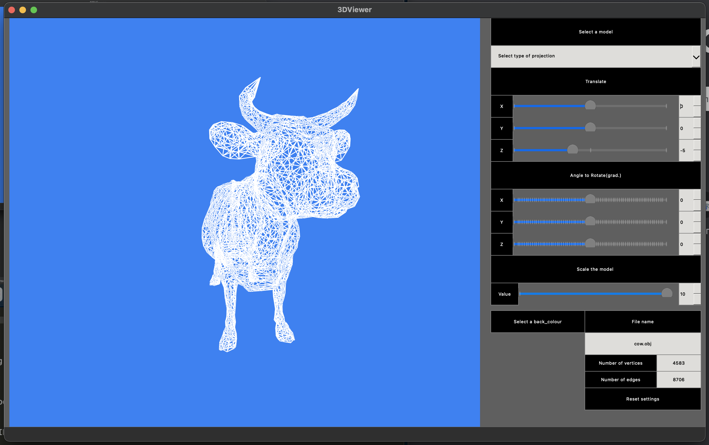
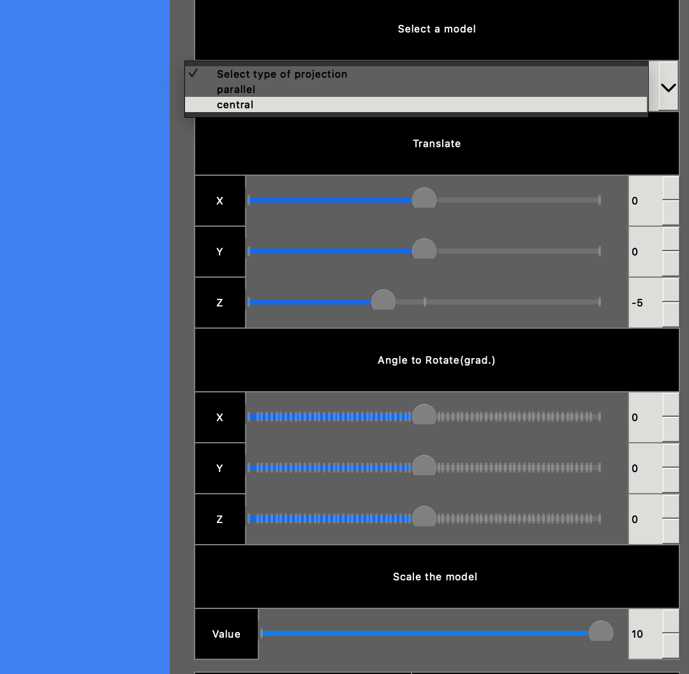
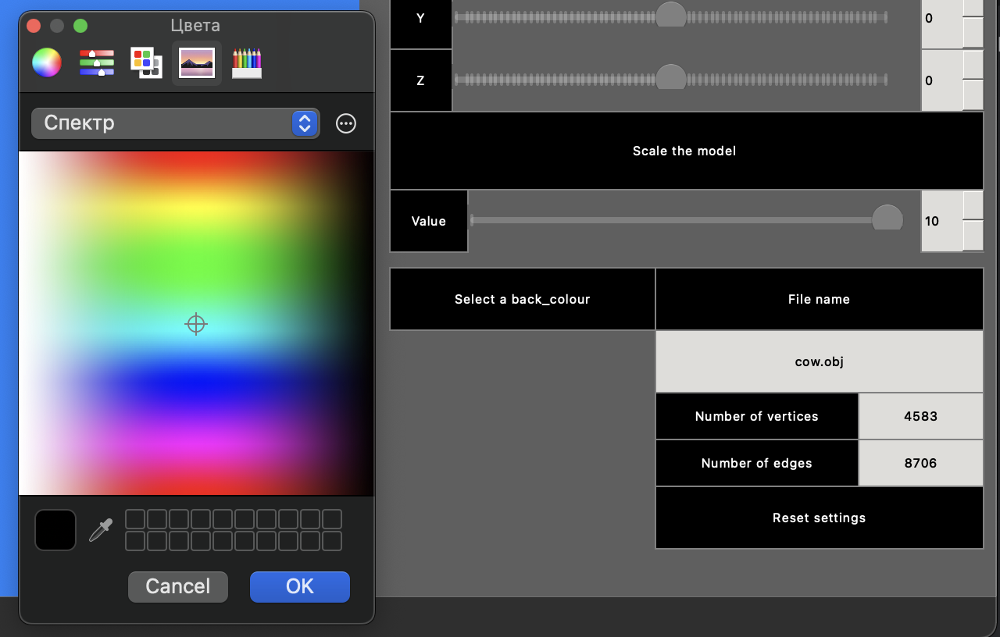

Обзор возможностей 3DViewer
Реализовано:
Загрузка каркасной модели из файла формата obj
Перемещение модели на заданное расстояние относительно осей X, Y, Z.
Поворот модели на заданный угол относительно своих осей X, Y, Z
Поворот модели на заданный угол относительно своих осей X, Y, Z
Масштабирование модели на заданное значение
Приложение написано с использованием библиотеки QT.
Функциональность графического интерфейса содержит:
Кнопку для выбора файла с моделью и поле для вывода его названия.
Зону визуализации каркасной модели.
Кнопку/кнопки и поля ввода для перемещения модели.
Кнопку/кнопки и поля ввода для поворота модели
Кнопку/кнопки и поля ввода для масштабирования модели.
Информацию о загруженной модели - название файла, кол-во вершин и ребер.
Программа позволяет настраивать тип проекции (параллельная и центральная)
Программа позволяет настраивать тип (сплошная, пунктирная), цвет и толщину ребер, способ отображения (отсутствует, круг, квадрат), цвет и размер вершин
Программа должна позволять выбирать цвет фона
Настройки сохраняются между перезапусками программы
Как установить и запустить?
В папке проекта в терминале выполнить команду make
Скриншоты:

Стартовый экран с выбранной моделью.

Изменение модели в пространстве

Настройка цвета фона, сброс настроек и другая полезная информация